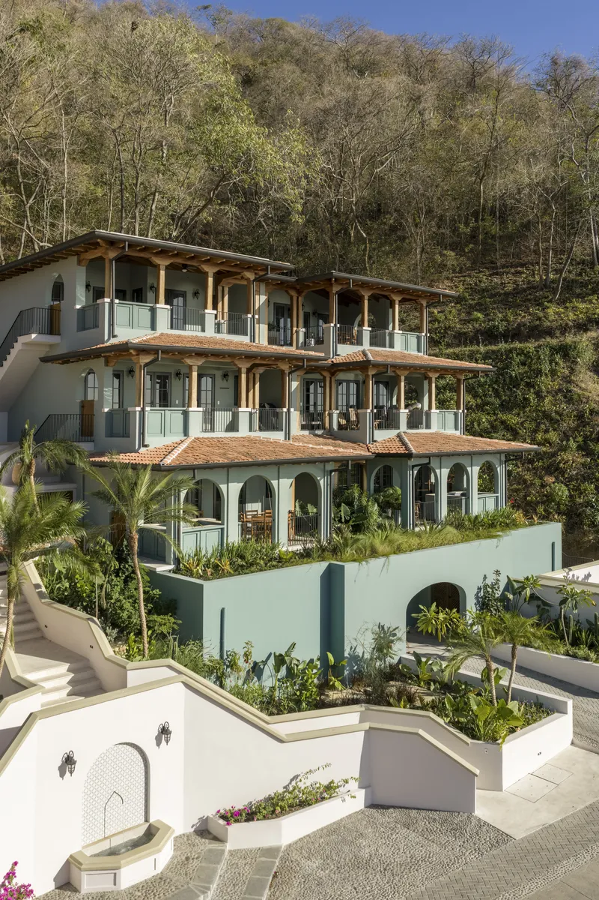
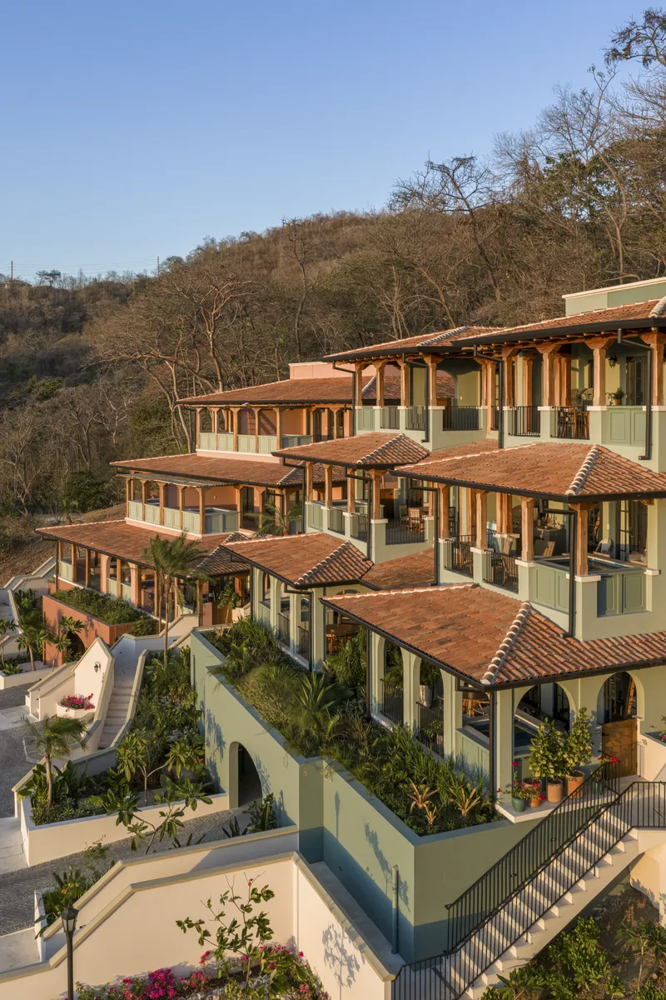
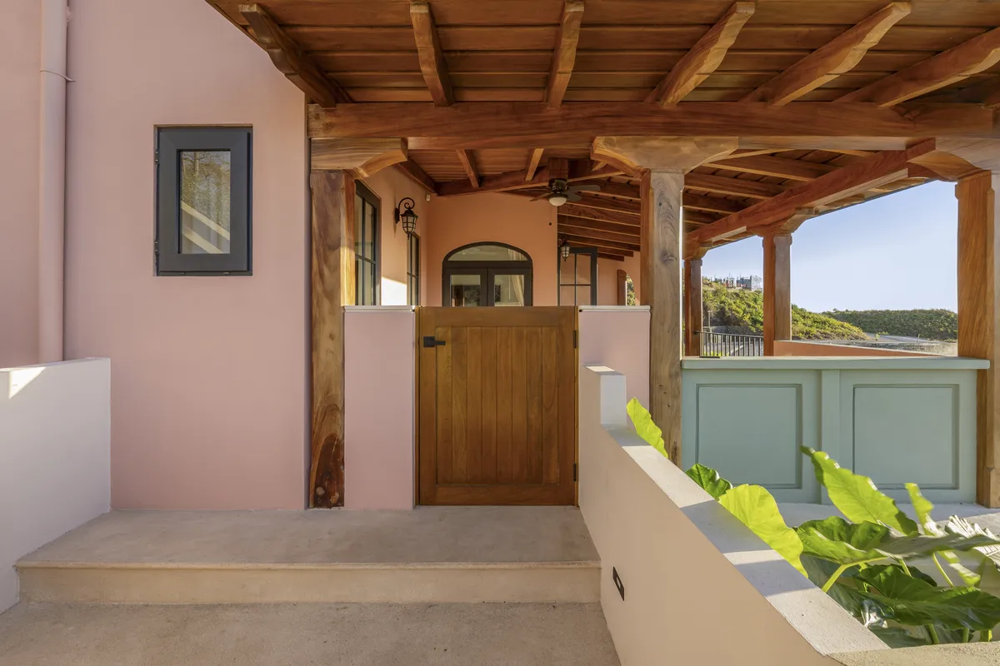
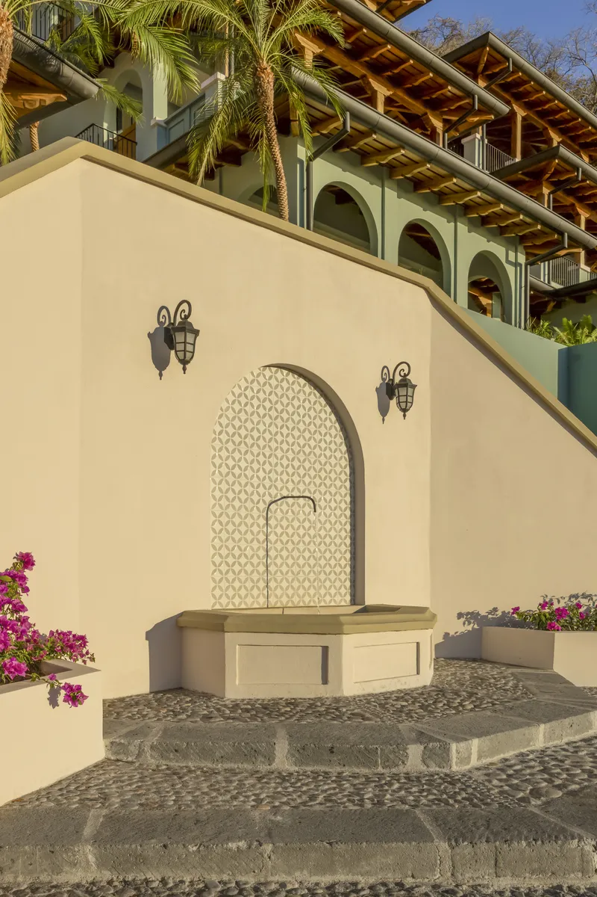
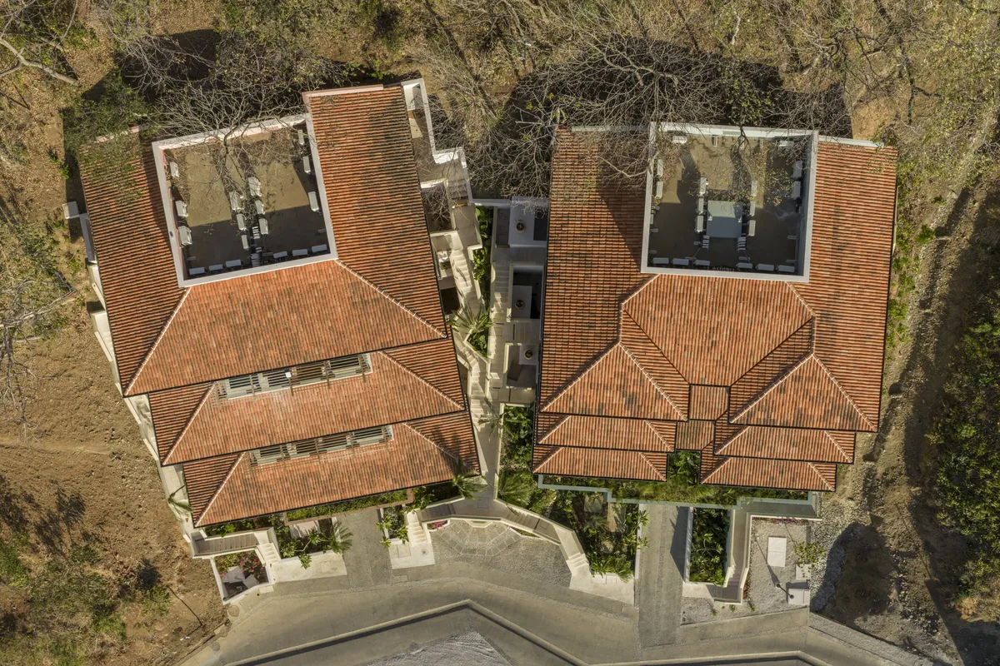
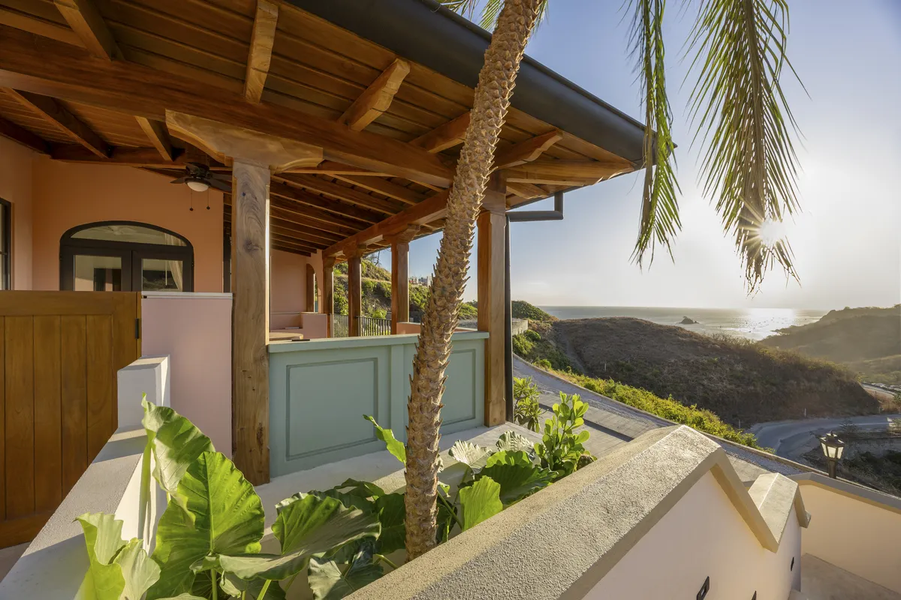
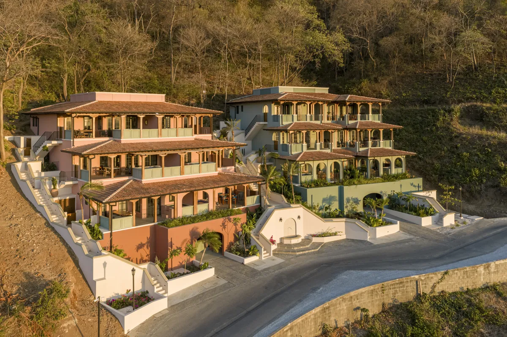
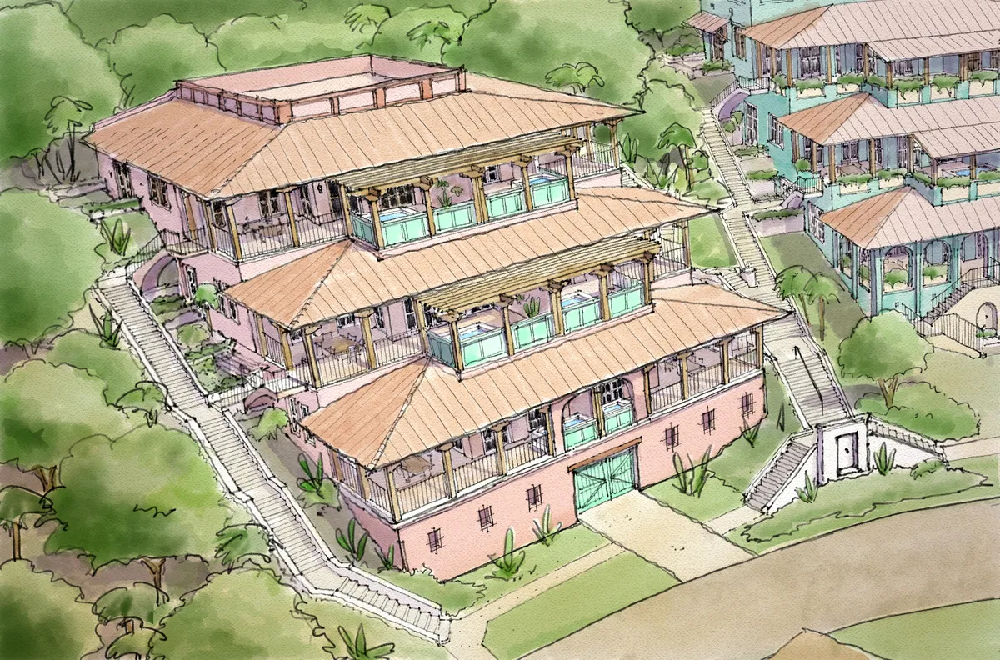

Los Altos Flats
Arquitectura — Vivienda Multifamiliar
Arquitectura — Vivienda Multifamiliar

Los Altos Flats replantea la vivienda multifamiliar en laderas tropicales al demostrar que la topografía no representa una limitación para el diseño, sino la oportunidad para crear una arquitectura profundamente conectada con el paisaje. Ubicado en las montañas de Las Catalinas, el proyecto está conformado por dos edificios residenciales que se adaptan cuidadosamente a la pendiente natural del terreno mediante una sección escalonada que permite que cada residencia disfrute de vistas abiertas hacia el océano Pacífico, privacidad, iluminación natural y ventilación cruzada. Esta estrategia convierte una condición compleja del sitio en el principal generador de la experiencia arquitectónica.

La innovación del proyecto no radica en la búsqueda de una forma icónica, sino en la manera en que la arquitectura desaparece dentro del paisaje para potenciarlo. En lugar de modificar agresivamente la montaña, el edificio se acomoda a ella, reduciendo movimientos de tierra, respetando la topografía existente y minimizando su impacto visual. Cada vivienda cuenta con amplias terrazas y piscina privada orientadas hacia el horizonte, generando una transición continua entre interior y exterior que responde al clima tropical.

Los Altos Flats forma parte del modelo urbano de Las Catalinas: la vivienda trasciende el ámbito privado para convertirse en una extensión de una ciudad caminable, conectada con plazas, senderos, comercios y la costa — un ejemplo de cómo la arquitectura contemporánea puede generar valor mediante el respeto por el contexto y una visión urbana de largo plazo.















Fotografía por Topofilia Studio.
Ya sea que esté imaginando una nueva comunidad, una residencia distintiva o un proyecto urbano transformador, estamos aquí para ayudarle a hacer realidad su visión.
Contáctenos